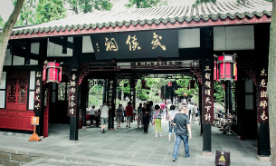
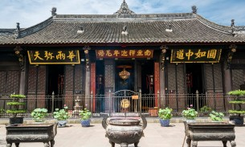
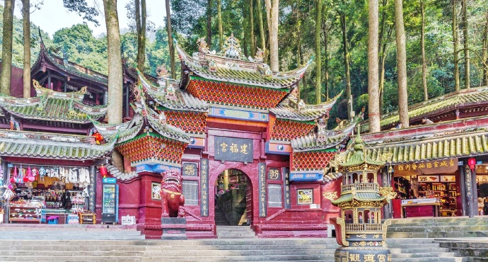
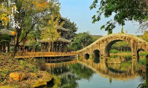

大熊猫繁育科研机构，完全模拟大熊猫野外生活环境，建有湖泊、溪流、竹林、草坪等，共饲养100多只大熊猫。除了大熊猫，还可以看到黑颈鹤、孔雀、鹭鸶等小动物。太阳产房和月亮产房集中了最可爱的刚出生、几个月的熊猫团子，非常可爱，强烈推荐！
-
-
 都江堰是全世界迄今为止，年代最久、唯一留存、以无坝引水为特征的宏大水利工程。主要有鱼嘴分水堤、飞沙堰溢洪道、宝瓶口进水口三大部分构成，一直发挥着防洪灌溉的作用。
都江堰是全世界迄今为止，年代最久、唯一留存、以无坝引水为特征的宏大水利工程。主要有鱼嘴分水堤、飞沙堰溢洪道、宝瓶口进水口三大部分构成，一直发挥着防洪灌溉的作用。 -
纪念的是蜀国丞相诸葛亮，明朝初年并入汉昭烈庙，也是全国影响最大的三国遗迹博物馆。由惠陵、汉昭烈庙、武侯祠三部分组成。祠内供奉刘备、诸葛亮等蜀汉英雄塑像50尊。
-
文殊院始建于隋朝，是川西著名佛教寺院，院内珍藏着许多珍贵文物和上万册佛经、文献。寺院内有天王殿、三大士殿、大雄宝殿等，还供奉着大小300余尊佛像。
-
青城山位于都江堰西部，是道教发祥地之一，素有“青城天下幽”之称。分为前山、后山两个景区，多数游客去的都是前山，后山更适合登山爱好者。几乎百步就可看到一座宮观，在茂密的植被覆盖下古典而神秘。
-
黄龙溪古镇距今有1700余年历史，是国家文化部命名的中国民间艺术(火龙)之乡、国家级环境优美小城镇。镇上古牌坊、古寺庙、古建筑民居与古榕树浑然一体，青石板铺就的街面，尽显古香古色。